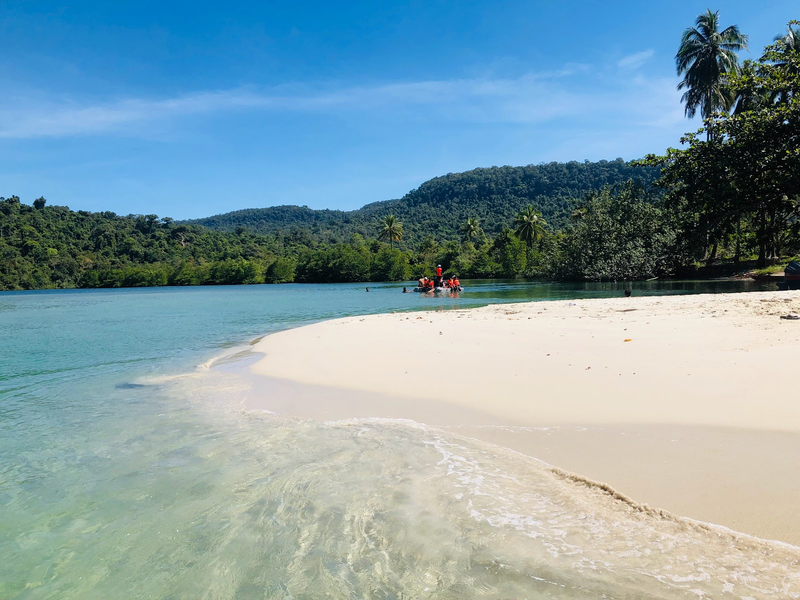
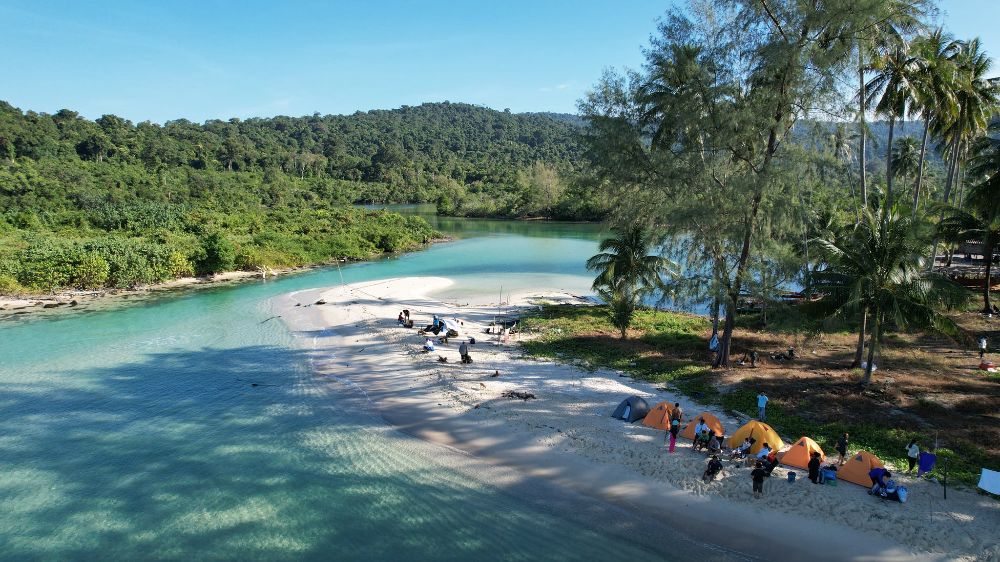
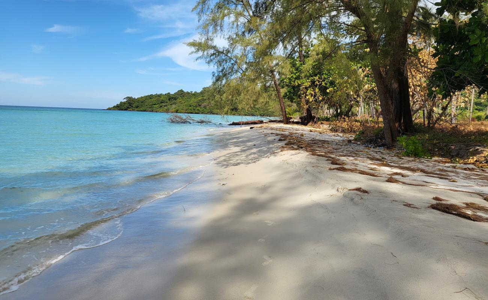
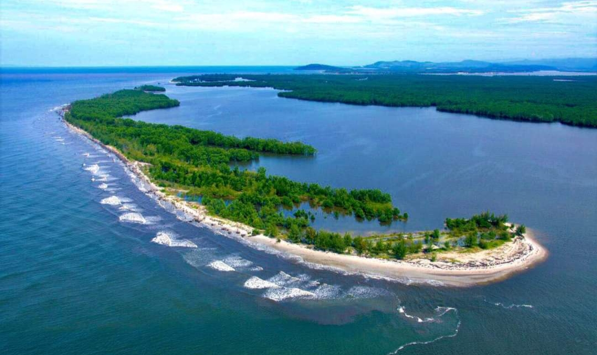
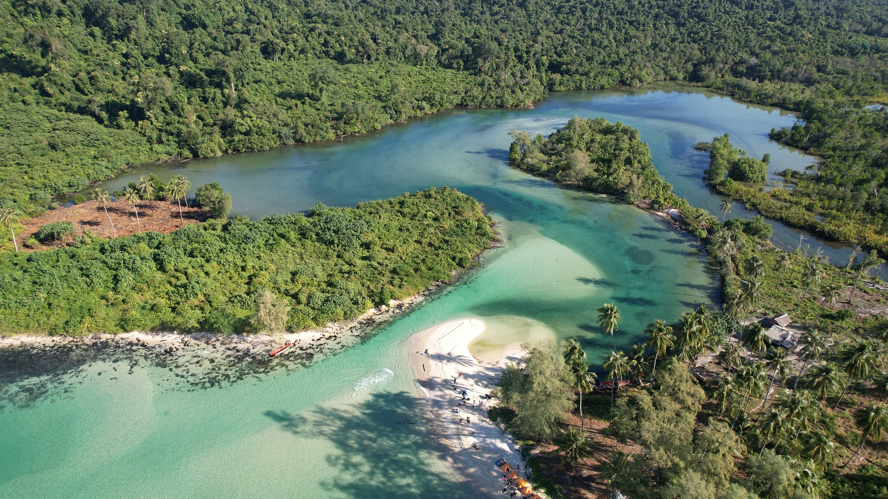

20% off
ចាប់ផ្តើមដំណើរកំសាន្តរបស់
អ្នកឥឡូវនេះ
កោះកុងក្រៅ ដែលជាកោះដ៏ធំបំផុតនៅក្នុងប្រទេសកម្ពុជា ស្ថិតនៅក្នុងឈូងសមុទ្រថៃ ក្នុងទឹកសមុទ្រនៃខេត្តកោះកុង។ កោះនេះមានភាពល្បីល្បាញដោយសារសម្រស់ធម្មជាតិរបស់វា ដែលនៅតែរក្សាបាននូវភាពដើម រួមមានឆ្នេរខ្សាច់ស ព្រៃត្រូពិចដ៏ខៀវស្រងាត់ និងទឹកសមុទ្រថ្លាឈ្វេង។ ផ្ទៃខាងក្នុងនៃកោះមានភ្នំខ្ពស់ៗ និងតំបន់ថ្មដាដែលបង្កើតបានជាទឹកជ្រោះដ៏ស្រស់ស្អាតជាច្រើន។ ទោះបីជាមានការអភិវឌ្ឍន៍មួយចំនួននៅក្នុងតំបន់នេះក៏ដោយ ក៏កោះកុងក្រៅនៅតែជាគោលដៅទេសចរណ៍សម្រាប់អ្នកដែលចូលចិត្តភាពស្ងប់ស្ងាត់ ធម្មជាតិ និងការរុករក។ ភ្ញៀវទេសចរអាចធ្វើដំណើរទស្សនាឆ្នេរ ដាំដើមកោងកាង មុជទឹកមើលផ្កាថ្ម ឬដើរលេងក្នុងព្រៃដើម្បីស្វែងរកសត្វព្រៃដ៏កម្រ។
ស្វែងយល់ពីប្រាសាទអង្គរវត្តដ៏គួរឱ្យស្ញប់ស្ញែង និងកន្លែងបុរាណវិទ្យានៅក្បែរនោះ ទស្សនាការសម្តែងអំពីរបាំប្រពៃណី រៀនអំពីការធ្វើម្ហូបខ្មែរ ស្វែងយល់ពីភាពទាក់ទាញនៃភូមិបណ្តែត ទឹកនៅលើបឹងទន្លេសាប ការដើរផ្សារផលិតផលខ្មែរ (made in cambodia market) ការកម្សាន្តពេលរាត្រីនៅលើផ្លូវ (PUB STREET) និងកន្លែងសម្រាប់សម្រាកលំហែកាយផ្សេងៗទៀត។
TOURISMLMLP មិនត្រឹមតែជាគេហទំព័រដែលចែករំលែកកន្លែងដំណើរកំសាន្តនោះទេ ព្រមទាំងផ្តល់សេវាកម្មងាយស្រួលទៅកាន់អតិថិជន និងប្រវត្តិសាស្រ្តសង្ខេបតាមខេត្ត នីមួយៗផងដែរ។